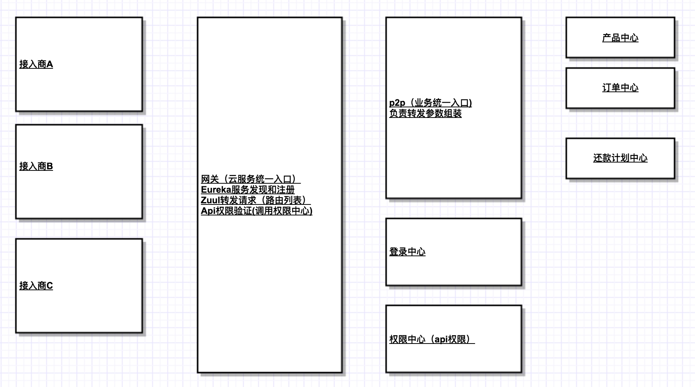

架构-架构流程图

登录机制
接入商 网关 中心
请求
登录api <----------------------------->登录中心 api
返回token
根据token请求 接入商的token
获取信息api <-----------------------------> p2p api <-------------------> 用户中心
返回用户 （转发） 返回用户信息
有效token 接入商的token
获取信息api <-----------------------------> p2p api <-------------------> 多个中心
返回组装后的信息 组装信息 返回处理信息
权限：数据权限+资源权限
资源权限
所有的资源权限都是后台的资源控制。
资源权限的设计：user - role -resources
1 显示控制
2 请求控制
接入商 网关 权限中心
调用api <--------------> 接入商自己维护自己的数据权限
思想：
我们会提供一套后台页面，如果接入方不用，可以自己定制，自己定制的时候就需要自己维护权限中心数据，我们只是提供一套api。所以我们只会验证api的权限。
数据权限
未开始
定时：p2p业务入口中跑定时任务的时候没有商户号
定义格式：php artisan commmadn:xxxx A000001 命令+商户号
p2p ----------------------------------------------------> 中心
app('request')->headers->set('商户号','b'); 接受商户号，走正常逻辑